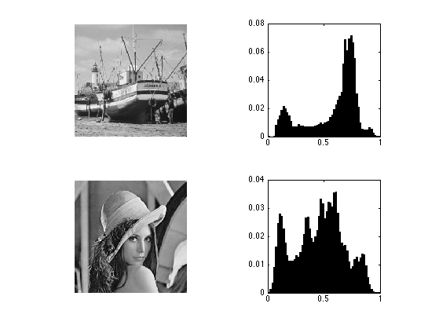
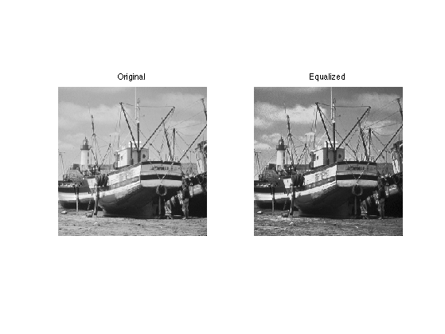
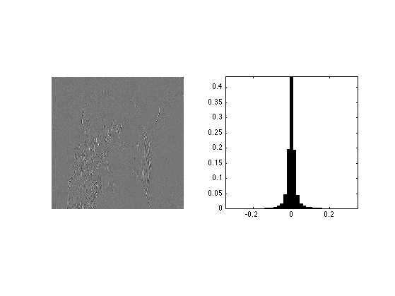
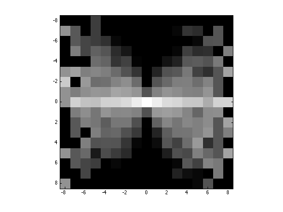
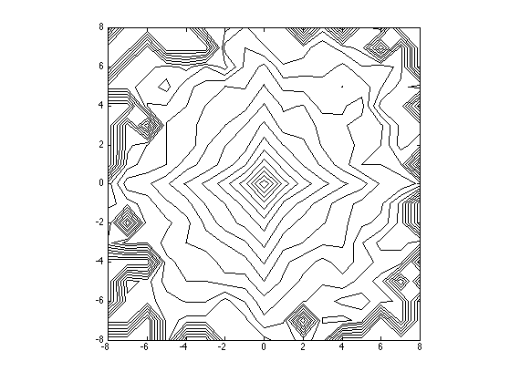

Natural Images Statistics
This numerical tour studies the statistics of natural images and their multiscale decomposition.
Contents
Installing toolboxes and setting up the path.
You need to download the following files: signal toolbox and general toolbox.
You need to unzip these toolboxes in your working directory, so that you have toolbox_signal and toolbox_general in your directory.
For Scilab user: you must replace the Matlab comment '%' by its Scilab counterpart '//'.
Recommandation: You should create a text file named for instance numericaltour.sce (in Scilab) or numericaltour.m (in Matlab) to write all the Scilab/Matlab command you want to execute. Then, simply run exec('numericaltour.sce'); (in Scilab) or numericaltour; (in Matlab) to run the commands.
Execute this line only if you are using Matlab.
getd = @(p)path(p,path); % scilab users must *not* execute this
Then you can add the toolboxes to the path.
getd('toolbox_signal/'); getd('toolbox_general/');
Histogram of Images and Equalization
The histogram of an image describes its gray-level repartition.
Load two images.
n = 256; M1 = rescale( load_image('boat', n) ); M2 = rescale( load_image('lena', n) );
Display the images and its histograms.
clf; subplot(2,2,1); imageplot(M1); subplot(2,2,2); [h,t] = hist(M1(:), 60); bar(t, h/sum(h)); axis('square'); subplot(2,2,3); imageplot(M2); subplot(2,2,4); [h,t] = hist(M2(:), 60); bar(t, h/sum(h)); axis('square');
Exercice 1: (check the solution) Histogram equalization is an orthogonal projector that maps the values of one signal onto the values of the other signal. This is achieved by assiging the sorted of ont signal to the sorted values of the other signla. Implement this for the two images.
exo1;
Statistics of the Wavelets Coefficients of Natural Images
Although the histograms of images are flat, the histogram of their wavelet coefficients are usually highly picked at zero, resulting in a low entropy.
Load an image.
n = 256*2;
M = rescale( load_image('lena', n) );
Compute its wavelet coefficients.
Jmin = 4; MW = perform_wavelet_transf(M,Jmin, +1);
Extract the fine horizontal details and display histograms. Take care at computing a centered histogram.
% extract the vertical details MW1 = MW(1:n/2,n/2+1:n); % compute histogram v = max(abs(MW1(:))); k = 20; t = linspace(-v,v,2*k+1); h = hist(MW1(:), t); % display clf; subplot(1,2,1); imageplot(MW1); subplot(1,2,2); bar(t, h/sum(h)); axis('tight'); axis('square');
Higher Order Statistics
In order to analyse higher order statistics, one needs to consider couples of wavelet coefficients. For instance, we can consider the joint distribution of a coefficient and of one of its neighbors. The interesting quantities are the joint histogram and the conditional histogram (normalized so that row sum to 1).
Compute quantized wavelet coefficients.
T = .03; MW1q = floor(abs(MW1/T)).*sign(MW1); nj = size(MW1,1);
Compute the neighbors coefficients.
% spacial shift t = 2; % you can try with other values C = reshape(MW1q([ones(1,t) 1:nj-t],:),size(MW1));
Compute the conditional histogram.
options.normalize = 1; [H,x,xc] = compute_conditional_histogram(MW1q,C, options);
Display.
q = 8; % width for display H = H((end+1)/2-q:(end+1)/2+q,(end+1)/2-q:(end+1)/2+q); clf; imagesc(-q:q,-q:q,max(log(H), -5)); axis image; colormap gray(256);
Compute and display joint distribution.
options.normalize = 0; [H,x,xc] = compute_conditional_histogram(MW1q,C, options); H = H((end+1)/2-q:(end+1)/2+q,(end+1)/2-q:(end+1)/2+q); % display level sets clf; contour(-q:q,-q:q,max(log(H), -5), 20, 'k'); axis image; colormap gray(256);
Conditional coding
Since the neighboring coefficients are typically un-correlated but dependant, one can use this dependancy to build a conditional coder. In essence, it amouts to using several coder, and coding a coefficient with the coder that corresponds to the neighbooring value. Here we consider 3 coder (depending on the sign of the neighbor).
Compute the contexts of the coder, this is the sign of the neighbor.
C = sign( reshape(MW1q([1 1:nj-1],:),size(MW1)) );
Compute the conditional histogram
[H,x,xc] = compute_conditional_histogram(MW1q,C);
Display the curve of the histogram
clf; plot(x,H, '.-'); axis([-10 10 0 max(H(:))]); legend('sign=-1', 'sign=0', 'sign=+1'); set_graphic_sizes([], 20);

Compare the entropy with/without coder.
% global entropy (without context) ent_total = compute_entropy(MW1q); % compute the weighted entropy of this context coder h0 = compute_histogram(C); H(H==0) = 1e-9; % avoid numerical problems ent_partial = sum( -log2(H).*H ); ent_cond = sum( ent_partial.*h0' ); % display the result disp(['Global coding: ' num2str(ent_total,3), ' bpp.']); disp(['Conditional coding: ' num2str(ent_cond,3), ' bpp.']);
Global coding: 0.938 bpp. Conditional coding: 0.829 bpp.